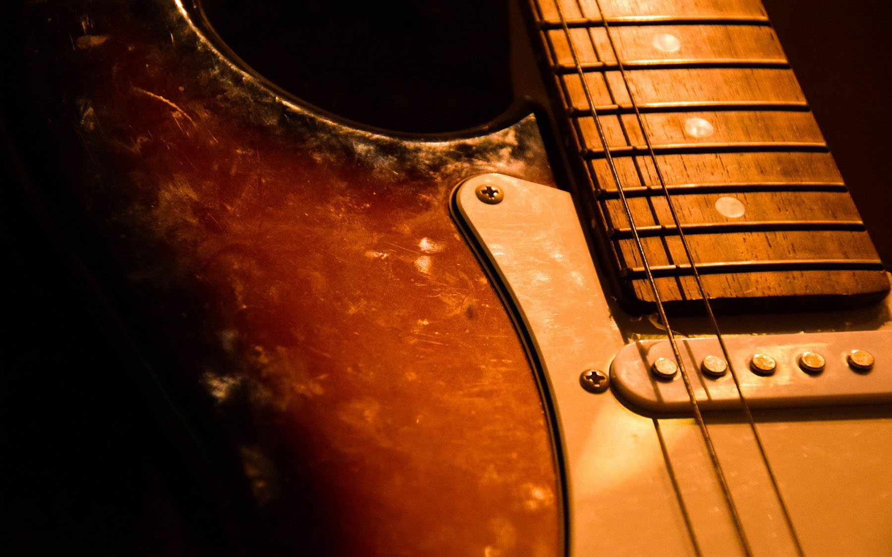

Art and music are basic human functions. Humankind and art cannot function without one another. We have the burning desire to create, whatever it may be and however tiny or grand. The interaction with sound is unavoidable, either to make it or take pleasure in it. People have always found music significant in their lives, whether for enjoyment in listening, the emotional response, performing, or creating. This is no different for classical music or contemporary concert music. Both musics have immense worth for our society; however, the problem we all know in this field is that this music is little known and hence underappreciated. As a musician and artist it is my responsibility that others can learn to enjoy the art for which I have utter passion.
It goes without saying that in mainstream American culture, classical or concert music is not a huge part of people's lives. There are still stigmas that contribute to this, as well as the practices of the government in the last two decades (declining music education in schools on the local level, resistance to increased NEA funding and less visibility of the arts on the national level; let us hope that the Obama administration can start to reverse these trends). Many people may still believe that classical music is for the rich, older, and the well-educated. Others may feel awkward about going to classical music events because they feel as if they need to act and dress a certain way in order to enter the concert or recital hall. Even more, the pretentiousness and elitism that some artists exhibit is amplified by some television shows, commercials, plays, books, by people of influence and even themselves, which distance musicians from mainstream society. While some of this is true, as with nearly any stereotype, it is not entirely true. With the impression that concert music has on society, the majority decide that it is not "for them" simply because they believe it has no relevance or worth to their lives. This is further compounded by the past government's lack of interest in promoting and supporting the arts, whether it is to fund arts organizations or arts education. Now, the current government give us hope and we have seen evidence of its commitment; but most importantly our American society needs to believe that everyone can find worth and enjoyment in classical/concert music.
The most common way one becomes involved with music is through listening or attending a musical event. Listening at home on a CD player, or in the car, on the computer, or on an iPod can be a very personal and fulfilling experience. Music, as we know, sets a mood and a vibe as we hear it in lounges, bars, parties, or other social events. Also, attending a concert is unique as it offers the excitement of hearing live musicians while providing the sound as it is meant to be heard (if it is acoustic music that is). Where else can one sit with other people, listen, and enjoy music in (relative) silence so that there are no distractions besides the music itself?
Music can also stimulate the mind. There are many things in music, to which one can listen and bring attention. One can be mindful of the melodies or themes, the harmony, the driving or relaxed rhythms, the color of the sounds, the activity of a piece, how the sounds are produced, or how they all relate to one another, all while, possibly figuring out how the composer conceived the piece. Focused and attentive listening is an incredible experience that allows one to be lost in a foreign sound world.
 Back to Course Home Page